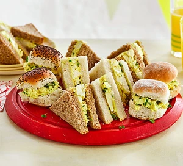

Sandwich

Description
Use tofu as a substitute for egg along with dairy-free mayo to make these vegan sandwiches. They're ideal for a kids' party where some children may have an intolerance or allergy
Ingredients
- 400g block of medium-firm tofu in water
- 6 tbsp vegan mayo
- ½ tsp Dijon mustard
- ¼ tsp ground turmeric
- 1 tbsp nutritional yeast
- 2 tsp finely chopped chives
- 1 large white sandwich or wholemeal loaf (10-12 slices), or 12 mini rolls (use gluten-free bread if necessary)
- 1 punnet cress (optional)
Steps
- Remove the tofu from the pack and press out the excess water, either between sheets of kitchen paper or a clean tea towel, weighed down with a plate for about 30 mins.
- Mix the mayo, mustard, turmeric and nutritional yeast together with a little salt and pepper.
- Crumble the tofu into a bowl, leaving large chunks to create a chopped egg texture. Gently stir in the chives. If you want it looser you can add more mayo.
- Spread the mixture on the bread to make four or five rounds of sandwiches (depending on how much filling you want), then add cress, if you like. Use a sharp knife to cut into triangles.